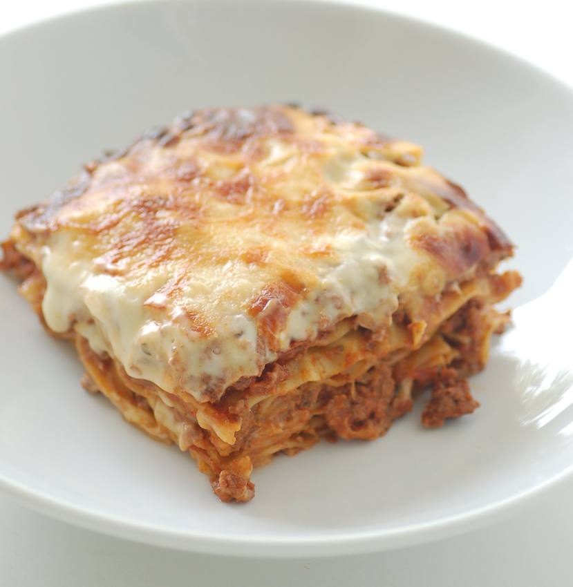

RECETA 01
Lasagna
Capas de pasta, carne, salsa de tomate y queso.
Ver ingredientes y preparación
Ingredientes · 4 porciones
- 9 láminas de pasta para lasagna
- 500 g de carne molida de res
- 500 g de salsa de tomate
- ½ cebolla y 2 dientes de ajo picados
- 250 g de queso mozzarella rallado
- 300 ml de salsa bechamel
- 1 cucharada de aceite, sal, pimienta y orégano
Preparación
- Precalienta el horno a 180 °C. Prepara la pasta según su empaque.
- Sofríe cebolla y ajo en el aceite. Agrega la carne y cocina completamente.
- Incorpora la salsa de tomate, sal, pimienta y orégano. Cocina 10 minutos.
- Alterna capas de salsa, pasta, bechamel y queso en un molde.
- Hornea de 30 a 35 minutos, hasta que esté caliente en el centro y dorada. Deja reposar 10 minutos.